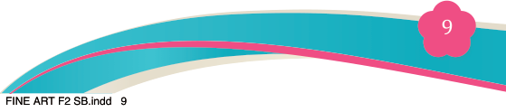
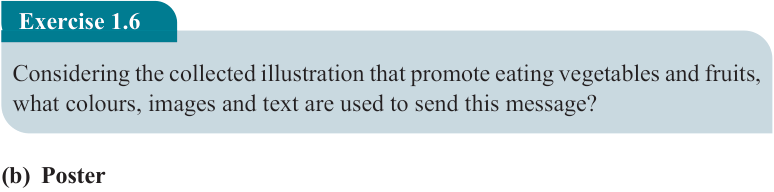
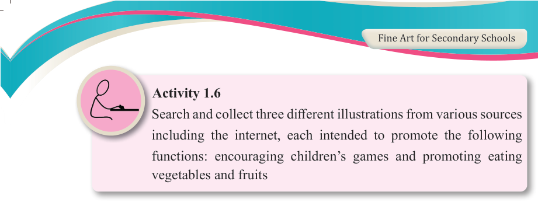
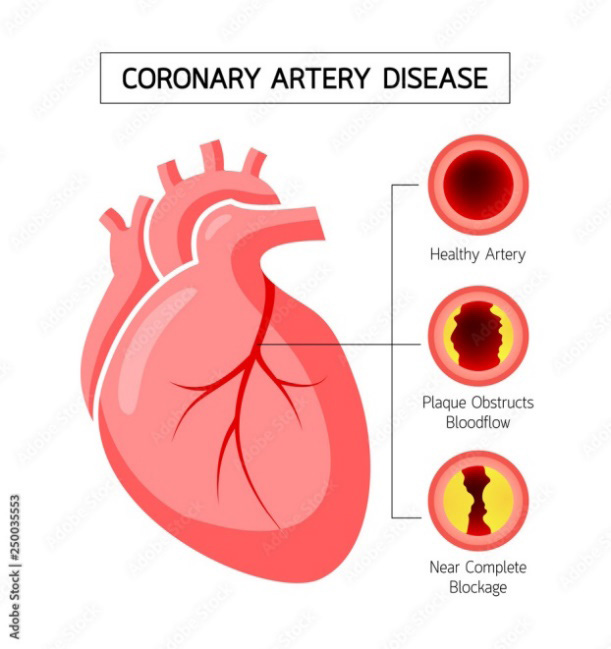
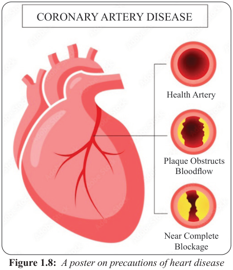

Fine Art for Secondary Schools

9

Student’s Book Form Two


Activity 1.6
Search and collect three different illustrations from various sources including the internet, each intended to promote the following functions: encouraging children’s games and promoting eating vegetables and fruits
Exercise 1.6
Considering the collected illustration that promote eating vegetables and fruits, what colours, images and text are used to send this message?
(b) Poster
A poster is a two-dimensional artwork designed for a public display to promote an
idea, product or event. When posters combine text and imagery, it is possible to
create visually engaging and informative compositions that are both eye-catching
and easy to understand (see Figure 1.8).
Posters are commonly placed in public spaces for mass communication, ensuring
messages reach a broad audience. For a poster to be effective, it must follow design
principles that enhance clarity, visual appeal and readability.


Health Artery
CORONARY ARTERY DISEASE
Plaque Obstructs
Bloodflow
Near Complete
Blockage
Figure 1.8: A poster on precautions of heart disease
04/08/2025 13:54